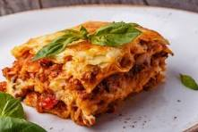

Lasagna

Description
Below is the ingredient list and recipe instructions for the worlds best lasagna courtesy of All Recipes
Ingredients
- 1 pound of sweet Italian sausage
3/4 pound lean ground beef
- 1/2 cup minced onion
- 2 cloves garlic, crushed
- 1 (28 ounce) can of curshed tomatoes
- 2 (6.5) cans of canned tomato sauce
- 2 (6 ounce) cans of tomato paste
- 1/2 cup of water
- 2 tablespoons of white sugar
- 4 tablespoons of chopped fresh parsley, divided
- 1 1/2 teaspoons dried basil leaves
- 1 1/2 teaspoons of salt, divided, or to taste
- 1 teaspoon of Italian seasoning
<1i>1/2 teaspoon of fennel seeds
- 1/4 teaspoon of ground black pepper
- 12 lasagna noodles
- 16 ounces of ricotta cheese
- 1 egg
- 3/4 pound mozzarella cheese, sliced
- 3/4 cup grated parmesan cheese
Steps
- Gather all of your ingredients.
- Cook sausage, ground beef, onion, and garlic in a Dutch oven over medium heat until well browned.
- Stir in crushed tomatoes, tomato sauce, tomato paste, and water. Season with sugar, 2 tablespoons parsley, basil, 1 teaspoon salt, Italian seasoning, fennel seeds, and pepper. Simmer, covered, for about 1 1/2 hours, stirring occasionally.
- Bring a large pot of lightly salted water to a boil. Cook lasagna noodles in boiling water for 8 to 10 minutes. Drain noodles, and rinse with cold water.
- In a mixing bowl, combine ricotta cheese with egg, remaining 2 tablespoons parsley, and 1/2 teaspoon salt.
- Preheat the oven to 375 degrees F (190 degrees C).
- To assemble, spread 1 1/2 cups of meat sauce in the bottom of a 9x13-inch baking dish. Arrange 6 noodles lengthwise over meat sauce, overlapping slightly. Spread with 1/2 of the ricotta cheese mixture. Top with 1/3 of the mozzarella cheese slices. Spoon 1 1/2 cups of meat sauce over mozzerella, and sprinkle with 1/4 cup parmesan cheese.
- Repeat layers, and top with remaining mozzarella and parmesan cheese. Cover with foil: to prevent sticking, either spray foil with cooking spray or make sure the foil does not touch the cheese.
- Bake in the preheated oven for 25 minutes. Remove the foil and bake for an additional 25 minutes.
- Rest lasagna for 15 minutes before serving.